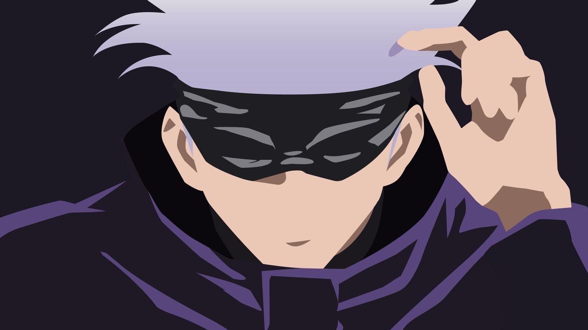

Satoru Gojo
Strongest Jujutsu Sorcerer in the world

Satoru Gojo (五ご条じょう悟さとる) is one of the main protagonists of the Jujutsu Kaisen series. He is a special grade jujutsu sorcerer and widely recognized as the strongest in the world.
About Satoru:
- Satoru is known for his strength, averaging over 190 cm in height and having snow-white hair and the vibrant blue Six Eyes.
- He works as a teacher at Tokyo Jujutsu High and uses his influence to protect and train young allies.
- Satoru's appearance is characterized by his height, leanness, and muscularity.
- He is known for his casual looks, often wearing sunglasses and a dark blue zip-up jacket.
- Satoru's appearance has been a subject of interest in the wiki, with various images and captions provided.
- Satoru is a complex individual, often seen as nonchalant and playful but also unsympathetic and cruel towards sorcerer executives.
- He is confident in his abilities and reputation as a powerful sorcerer, believing himself to be invincible.
- He is apathetic towards anyone he deems weak and arrogant, believing he is the strongest in the world.
- Satoru's combative style is characterized by aggressive and domineering attacks, flaunting his mastered techniques.
- He prioritizes his enemies' destruction over saving innocent people in a crisis.
- Despite his haughtiness and strength, Satoru is more human than he first appears.
- He retrieved Riko's corpse with a sorrowful look after defeating Toji, showing his grief over her death.
- He was left horrified and panicked after learning that his best friend, Suguru Geto, had become a murderous curse user.
- His trauma over losing his best friend and Yuji caused his downfall in Shibuya.
- Satoru's endgame is to reform the jujutsu world from the bottom-up through education.
- He seeks to foster a new generation of sorcerers who will one day become his equals.
- Satoru Gojo shows off his overwhelming power, holding immense amounts of cursed energy and a dangerously powerful technique.
"I can only save those who are already prepared to be saved by others"
-- Gojo Satoru